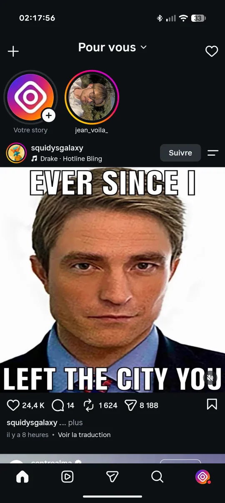
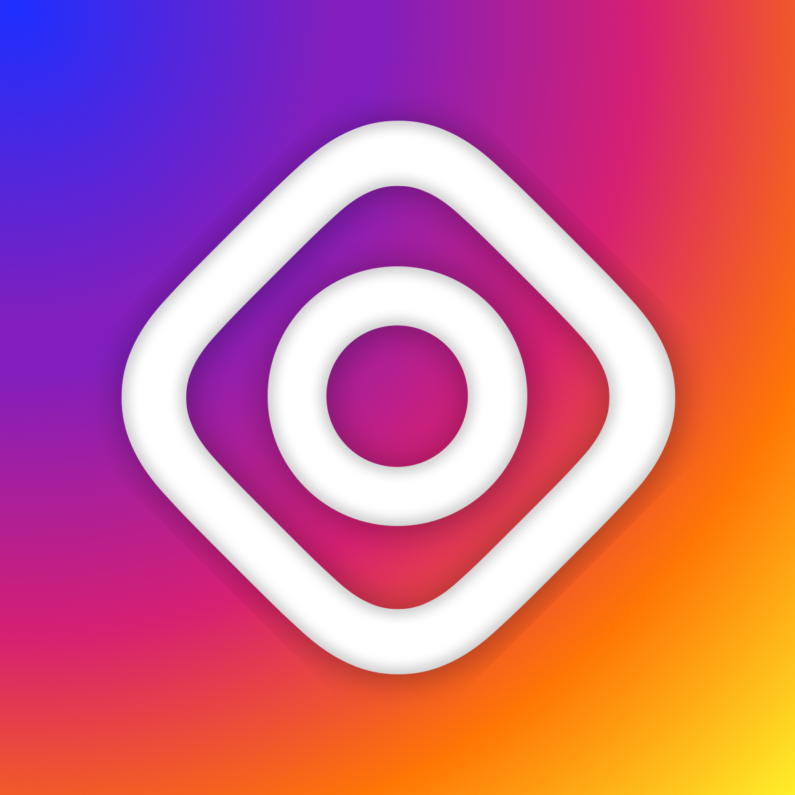

Press kit
Contact
Email: unhooked@gmail.com
About Unhooked
Unhooked is a free, open-source Android app based on the official Instagram app. Open-source patches remove the home feed, Reels, Explore, suggested accounts, ads and telemetry, while direct messages, stories, search, profiles and notifications keep working. Each block can be switched on or off from an in-app settings page. The project is developed in the open on GitHub and distributed as an APK through GitHub releases.
- Name
- Unhooked
- Platform
- Android
- Price
- Free, no ads, no subscription
- License
- GNU GPL-3.0
- First release
- December 30, 2025
- Total downloads
- See GitHub releases
- Latest version
- See GitHub releases
- Created by
- jean-voila, with community contributors
- Source code
- github.com/jean-voila/Unhooked
- Official channels
- Instagram @unhooked_official · Discord
- Website
- jean-voila.github.io/Unhooked
Key features
- Blocks the home feed, Reels (tab and feed), Explore, suggested accounts and ads.
- Keeps direct messages, stories, search, profiles, notifications, and Reels or posts shared in conversations.
- Every block is a separate switch, opened by long-pressing the Home tab.
- Optional “Following feed only” mode: a chronological feed of followed accounts, without recommended posts.
- Hide any bottom-bar icon and choose which screen the app opens on.
- Optional permanent lock: blocks can be made stricter but not turned off without reinstalling.
- In-app updates with release notes.
- Two builds: one that replaces Instagram, and a clone that installs alongside the official app.
How it works
Unhooked applies patches to the official Instagram Android APK with the open-source Morphe patcher. The patches locate code by stable traits rather than obfuscated names, so they keep working across Instagram updates. Blocked surfaces are stopped at the network level: requests for the feed, Reels or Explore are refused inside the app, so that content is never downloaded. Analytics and telemetry requests are blocked the same way. The app does not use a proxy server and does not collect user data.
Screenshots
Same account, same screen, captured on September 13, 2026 on an Android phone set to French. Click an image to download it in full resolution (1080 × 2410 PNG).


Before: official Instagram before.png · 1080 × 2410 After: Unhooked
after.png · 1080 × 2410
After: Unhooked
after.png · 1080 × 2410
Logos



App icon, square app_icon_not_rounded.png · 1200 × 1200 PNGThe name is written Unhooked. Please do not alter the icon's colours or proportions.